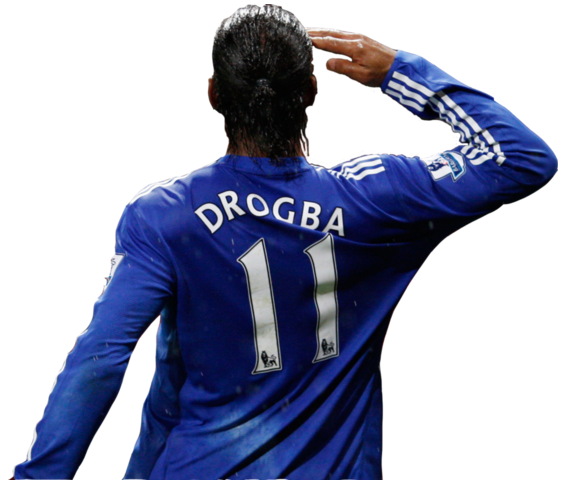
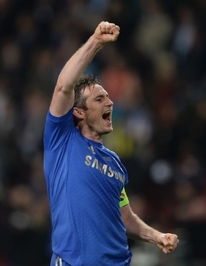
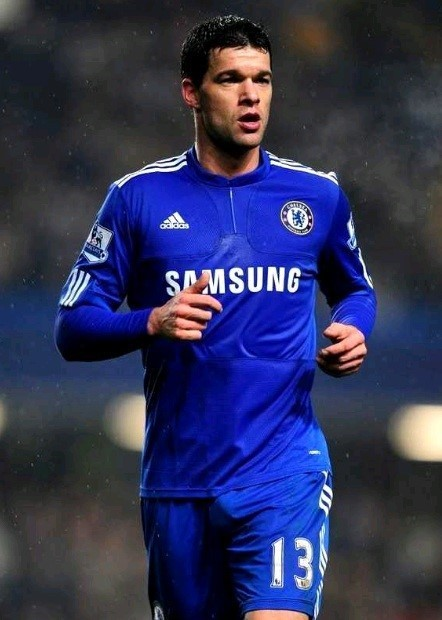

- How to I know this marvelous team
- The Chelsea legend
- Complement to Chelsea
2. The Chelsea legend
There are a lot of legends in Chelsea.
They are all committed to the team and affectionate.
I would like to inform you that the legendary players
I introduce are part of the legendary players
and have been selected only by my preference.
- Didier Drogba
- Frank Lampard
- Michael Ballack
Didier Droggba
He played for Chelsea for eight seasons
It was so popular that I didn't miss the best player in Africa.
He scored 163 goals for Chelsea.

Frank Lampard
He played for Chelsea for 10 seasons from 04-05.
and was the pillar of the team in the absence of captain John Terry.
Despite being a midfielder, he scored a lot. he nicknamed the middle-riker

Michael Ballack
I think there may be people who wonder about putting Michael Ballack in a legendary player.
But I'd like to ask how many Chelsea players have as much affection for the team as Ballack.
Ballack loved the team and was the only sub player to hold the pole in an important game.
He wanted to stay at Chelsea with a weekly cut, but the boards refused to accept it.
